БФТ · КОМАНДЫ · BACKLOG.MD
Service Blueprint
из БФТ: бэклог,
который рисует карту
ИИ-агент раскладывает требования в проект Backlog.md. Скрипт собирает из него одну карту для всех команд.
БФТ отвечает «что требуется».
Карта — «кто, где и как это работает».
Ситуация
Инициатива режется на пять команд —
и каждая видит свой кусок
БФТ — список требований по типам: ФТ, ИТ, НФТ. Общей картины в нём нет: что увидит человек на каждом шаге, кто за это отвечает и что происходит за кадром.
Ответ
Одна карта — три слоя на весь экран
Путь человека
Раскадровка: экраны каждого персонажа слева направо, по этапам.
Бэклог команд
Одна задача — один результат одной команды. Цвет — команда.
Слой системной аналитики
Технические карточки в четырёх рядах Service Blueprint.
Колонки у всех слоёв общие — этапы пути. Переключатель открывает тот же этап на другом слое. Пример в колоде вымышленный: перезапуск акции DineClub «билет = скидка 10%».
Слой 1 · что видят
Путь каждого — экранами, слева направо
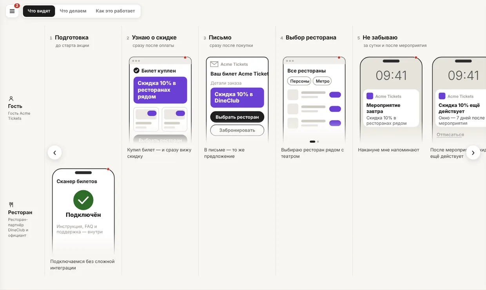
Слой 2 · что делаем
Бэклог по этапам — видно, где чья работа
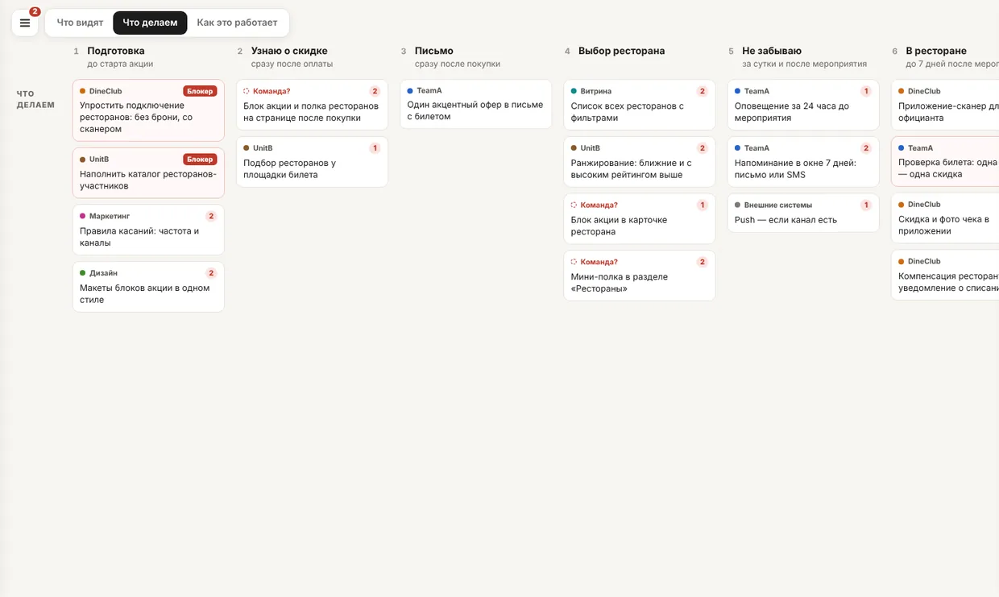
- Одна задача — один результатдо 80 знаков, без API и таблиц
- Команда не определена?«Команда?» красным и кандидаты — выбор за PO
- Блокеры и вопросына задаче, а не в переписке
- Фильтр по командеподсвечивает её работу на всей карте
Клик по задаче
Постановка для техлида — не «как», а «что и зачем»
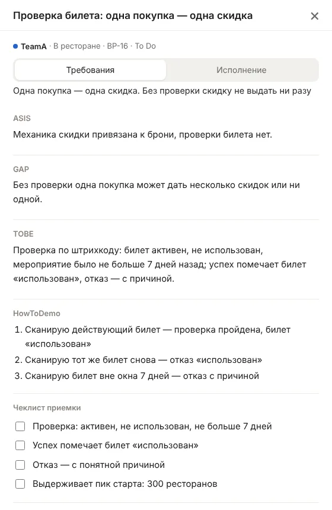
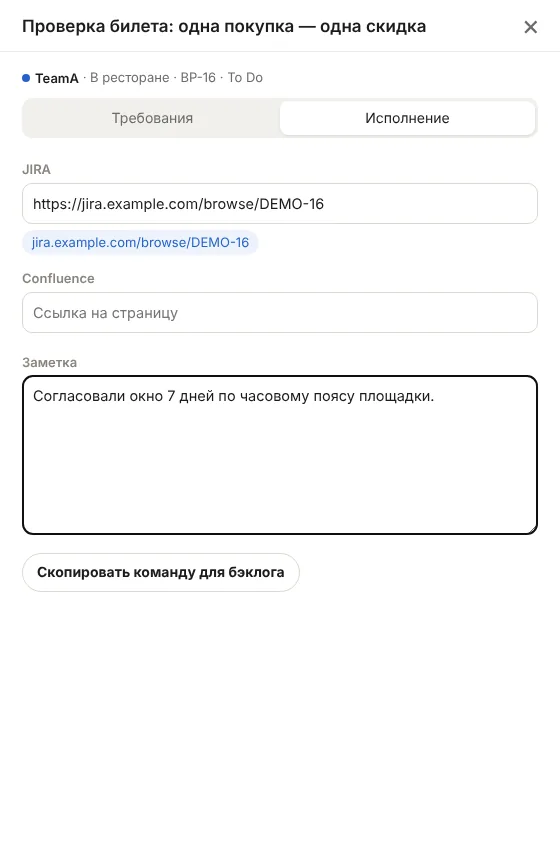
- ASIS → GAP → TOBEкак сейчас, чего не хватает, каким станет
- HowToDemoсценарий проверки от лица пользователя
- Чеклист приемкикритерии приемки задачи Backlog.md
- ИсполнениеJIRA, Confluence, заметка → одна команда backlog task edit
Слой 3 · как это работает
Четыре ряда Service Blueprint
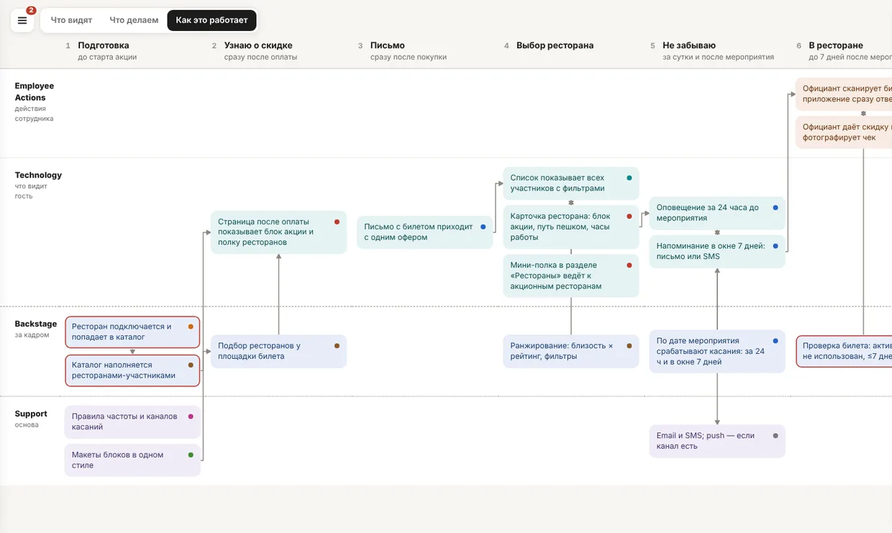
Employee Actions
Сотрудник на виду у гостя: официант со сканером. Бывает пустым.
Technology
Что видит гость: страница, письмо, уведомление.
Backstage
За линией видимости: каталог, проверка, триггеры.
Support
Общие ресурсы и внешние каналы.
Ряд — слой, а не система и не команда. Стрелки строятся сами из ссылок между карточками.
Клик по карточке
Карточка — техническая задача: кто, зачем и как
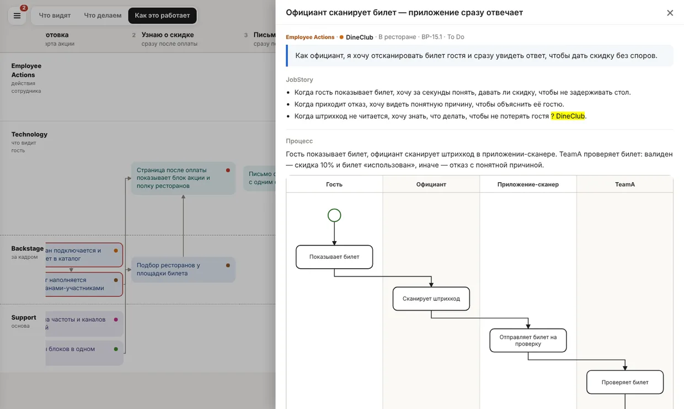
- UserStory«Как официант, я хочу …, чтобы …»
- JobStoryситуации, которые карточка закрывает: «Когда …, хочу …, чтобы …»
- Процесссхемой BPMN по участникам
- Параметры, HowToDemo, ссылкивход и выход, как показать, куда смотреть
Процесс
Агент пишет шаги списком — скрипт рисует BPMN
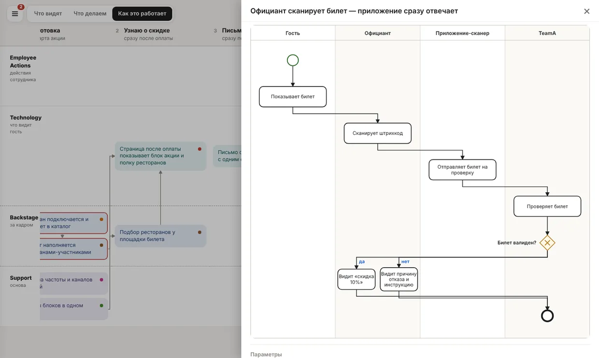
Дорожка — участник, ромб — развилка, ветки сходятся в следующий шаг. Схему никто не рисует руками: поменял шаг — сборка перерисует.
Клик по кадру
Требования к экрану — стек заметок для дизайнера
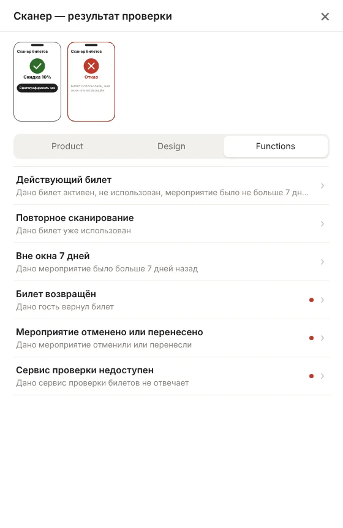
- Productjob stories: «Когда …, хочу …, чтобы …»
- Designгде экран, что главное, куда дальше, ограничения
- Functionsсценарии Дано / Когда / Тогда, включая отказы
- Одна заметка — одно требованиес источником в БФТ; неизвестное — красной точкой
Хранилище
Все данные — проект Backlog.md
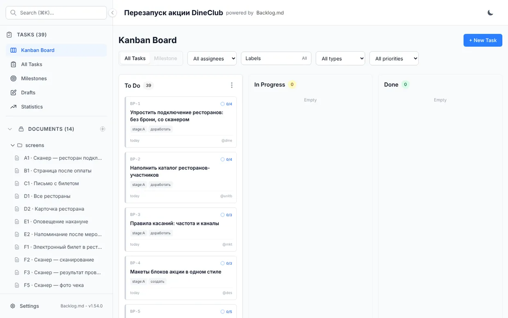
Задача команды — задача Backlog.md, карточка — её подзадача, заметки экранов — документы. Агент ведёт всё встроенным ./backlog.py, команда — на доске Backlog.md.
Тот же файл — в Backlog.md
Тот же процесс в Backlog.md — схема mermaid
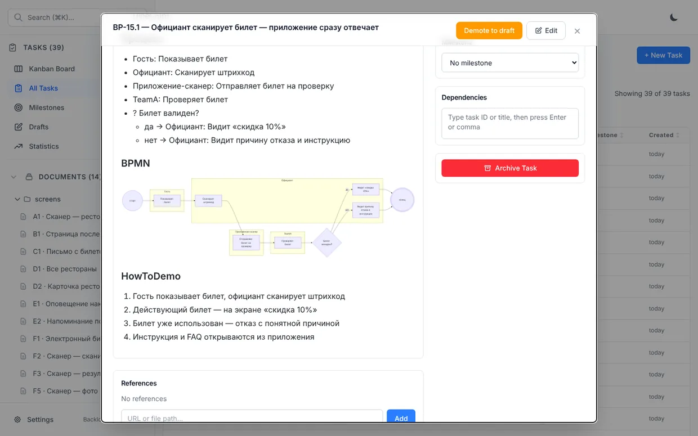
Как это собирается
Агент пишет бэклог, скрипт рисует карту
Согласована с PO
Персонажи, этапы и экраны из БФТ. Пробелы — вопросами PO.
Агент через CLI
Задачи, карточки с историями и процессом, заметки экранов, метки.
Линтер
Каждое ФТ, ИТ, НФТ на карте, нет технических слов, ссылки живые.
Без ИИ
BPMN из процесса, страница карты и автономный zip.
Ни одной картинки ИИ не рисует: схемы и страница детерминированы — тот же бэклог даёт тот же файл байт в байт.
Правки
Правой кнопкой — замечание, в меню — промпт агенту
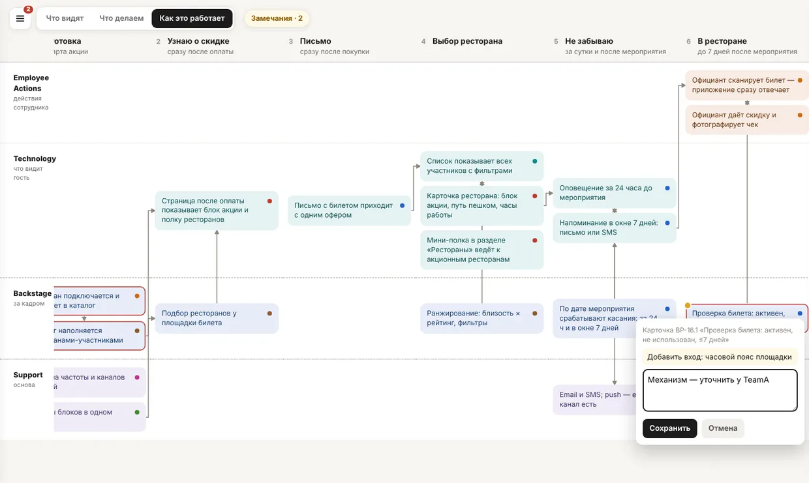
- Любая секциякадр, этап, задача, карточка, заметка
- Промпт с файламичто править и в каком файле бэклога
- Круг закрывается сампересобранная карта закрывает учтённые замечания
Автономный проект
Папку можно отдать любому харнессу
CLI внутри
./backlog.py — Backlog.md на Python, тот же формат файлов.
Сборка внутри
./blueprint.py build — карта и архив.
Правила внутри
Стандарт карты, экранов и истории — в .blueprint/rules.
Инструкции агенту
CLAUDE.md, AGENTS.md, GEMINI.md — что где лежит и как работать.
- Ничего не ставитьнужен только python3
- Без навыка и репозиториявсё, что нужно агенту, — в папке
- Совместим с Backlog.mdnpm-пакет читает те же файлы: доска и браузер
Живая карта
Карта целиком
Вымышленная инициатива: компании, команды и задачи придуманы. Карта собрана тем же скриптом, что и для настоящих БФТ, — одним файлом, без интернета.
Бэклог живёт дальше —
карта пересобирается
Архив — автономная папка: распаковал, отдал агенту — он ведёт бэклог и пересобирает карту сам.
навык bft-blueprint ↗пример проекта .zip